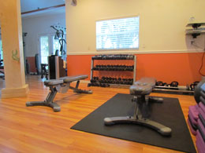
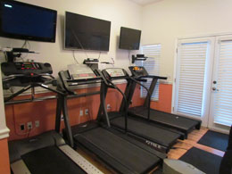
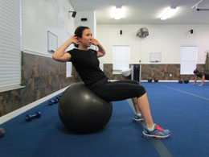

Weights

Our facility includes a weight training area with several weight options. Build lean muscle with weights and improve your core with weight training.
Cardio

Burn fat through cardio workouts. If you need to lose 20lbs or more, include at least 30 minutes of cardio each day. We have several equipment choices for your workout.
Personal Training

Common Exercises
The following are common exercises that we encourage our clients to do as part of their daily exercise routine.
- Burpee
- Burpees are a great, full body exercise to increase your strength and endurance. Begin in a standing position, drop into a squat and extend your hands forward, kick your feet back and then forward again quickly, and then jump up from a squatted position.
- Plank
- Planks build your core strength. To perform a plank, get in a push up position and rest your forearms on the floor. Hold the position as long as you can.
- Mountain Climber
- Mountain climbers are a good cardio exercise. Place your hands on the floor in a push up position, then bring one knee up to your chest and then switch as quickly as you can (as though you are climbing a mountain).
For more information about how to stay active, visit http://www.fitness.gov/be-active/ways-to-be-active/.